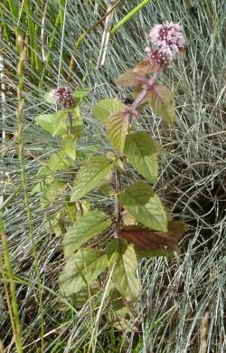

Edible flower or tea · May–Sep
Water mint
Mentha aquatica
Also called Water mint, Mismín dearg
Water mint is a edible flower or tea you can forage from May to September across Ireland. Purple-tinged mint of stream banks and ditches with round lilac flower heads and a strong peppermint smell.

When is water mint in season in Ireland?
Water mint is usually in season May to September. Timing shifts with weather, latitude and altitude.
Where does water mint grow in Ireland?
Water mint grows across Ireland. Regions: Munster, Leinster, Connacht, Ulster (Republic).
How do you recognise water mint?
Purple-tinged mint of stream banks and ditches with round lilac flower heads and a strong peppermint smell.
How do you harvest water mint?
Pick flowers on a dry, sunny morning once the dew has gone, when the scent is strongest. Take a few heads from each plant so it can still set fruit.
How do you eat water mint?
Tea, sauces, drinks.
How do you store water mint?
Dry.